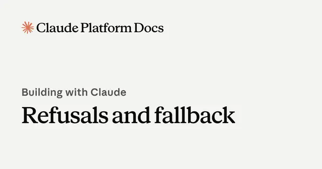

#anthropic
Claude APIの「拒否」は無料？Anthropicが明示した課金とフォールバックの仕組み

AnthropicはClaude APIにおける安全性判定による「refusal（拒否）」と、その際の課金ルール、別モデルへ処理を引き継ぐフォールバックの仕組みを公開しています。特に重要なのは、出力開始前に拒否されたリクエストは課金されない一方、途中まで出力してから拒否された場合は通常料金が発生する点です。
記事で取り上げている点
- 出力前の拒否はトークンが記録されても課金されない
- 途中で拒否されると入力・出力とも課金対象
- `usage.iterations`が実際の課金確認で重要
- フォールバックで拒否をユーザーから隠蔽可能
- 今後の展望
一次情報（出典） platform.claude.com